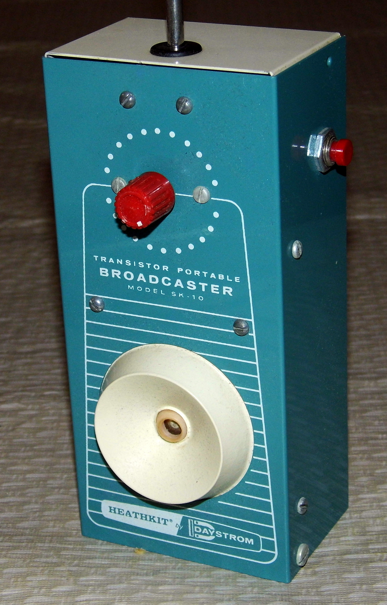

This radio will save you!
Turn on the radio to search for help!

"Vintage Heathkit Transistor Portable Broadcaster Walkie-Talkie, Model SK-10, Circa 1960s" by France1978 is licensed under CC BY 2.0. To view a copy of this license, visit https://creativecommons.org/licenses/by/2.0/?ref=openverse.
Start Over